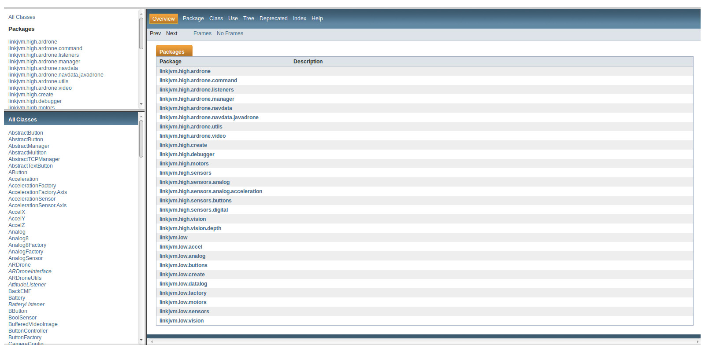
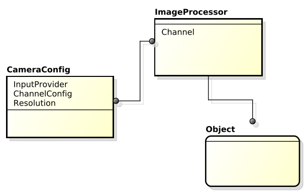

Markus Klein / kleiinnn
You can execute any JVM language(Scala, JavaScript(Rhino), ...) with LinkJVM.
You can download a zip file containing all needed resources from my local webserver.
My IP: 1.2.3.4
LinkJVM folder to the root of your flash drivemedia/sda1/LinkJVMlinkjvm_installer.cTo execute a Java program on the Link via BotUI, you need a C wrapper which starts the JVM.
#include <stdlib.h>
#define JAR_LOCATION /path/to/jar
#define JAR_NAME myJar.jar
int main() {
return system("export BOOTCLASSPATH=\"/usr/share/jamvm/classes.zip:\
/usr/share/classpath/glibj.zip:/usr/share/classpath/tools.zip:\
/usr/lib/linkjvmjava.jar\"; export CLASSPATH=\"/usr/share/jamvm/classes.zip:\
/usr/share/classpath/glibj.zip:/usr/share/classpath/tools.zip:\
/usr/lib/linkjvmjava.jar:.\"; export LD_LIBRARY_PATH=\"\
/usr/lib/classpath:/usr/lib\"; java -jar CLASS_LOCATION/JAR_NAME");
}
Also a Github Gist: gist.github.com/kleiinnn/8649678
LinkJVM automatically uploads a excutable jar file and generates the C wrapper so it can be directly started via BotUI.
Just run LinkJVM-Uploader.jar and select the file you want to upload.
We also plan to develop an eclipse plugin for automatic wrapping, compilation and uploading.
JavaDoc API: http://linkjvm.github.io/docs
The demobot should drive straight until the lever sensor placed at the front of the demobot bumps.
Basically, there a two kinds of sensors:
IAnalogSensor interfaceIDigitalSensor interface
import linkjvm.high.sensors.analog.AnalogSensor;
import linkjvm.high.sensors.analog.acceleration.AccelerationSensor;
(...)
//Create a new analog sensor
AnalogSensor analog = new AnalogSensor(PORT);
//Get the current sensor value
analog.getValue();
//Create a new x-axis acceleraion sensor
AccelerationSensor accel = new AccelerationSensor(AccelerationSensor.Axis.X);
//Get the acceleration sensor's value
accel.getValue();
import linkjvm.high.sensors.buttons.*;
import linkjvm.high.sensors.digital.DigitalSensor;
(...)
//Create a new digital sensor
DigitalSensor digital = new DigitalSensor(PORT);
//Get the current value
digital.getValue();
//Craete a new button
XButton button = new XButton();
//Get if the button is pressed
button.getValue();
button.isPressed();
//Set the button's text
button.setText("Text!");
import linkjvm.high.motors.Motor;
import linkjvm.high.motors.Servo;
(...)
//Create a new servo
Servo servo = new Servo();
//Enable the servo
servo.enable();
//Set the servo's position
servo.setPosition(1000);
//Disable the servo
servo.disable();
//Create a new motor
Motor motor = new Motor();
//Turn the motor at a specified percentage
motor.turn(60);
//Stop the motor
motor.freeze();
public static void main(String[] args){
Motor leftMotor = new Motor(0);
Motor rightMotor = new Motor(1);
DigitalSensor bumpSensor = new DigitalSensor(0);
leftMotor.turn(100);
rightMotor.turn(100);
while(!bumpSensor.getValue()){
try {
Thread.sleep(100);
} catch (InterruptedException e) {}
}
leftMotor.freeze();
rightMotor.freeze();
}
The create should drive straight until it bump. Then it should turn and start again exploring the room.
An instance of the create class is used to control the create. The method names are pretty equal to libkovan.
import linkjvm.high.create.Create;
(...)
Create create = new Create();
//Establishes a connection to the create
create.connect();
//Move the create forward
create.driveDirect(leftMotorSpeed, rightMotorSpeed);
//Returns the right cliff value
create.getRightCliff();
//Returns the left bumper value
create.getRightBump();
//Closes the connection to the create
create.disconnect();
public static void main(String[] args) {
Create create = new Create();
create.connect();
SideButton sb = new SideButton();
BButton bb = new BButton();
bb.setText("Start");
while(!bb.getValue());
while(!sb.getValue()) {
if(create.getLeftBump())
create.spinClockwise(250);
else if(create.getRightBump())
create.spinCounterClockwise(250);
else
create.driveStraigth(400);
try {
Thread.sleep(50);
} catch (InterruptedException e) {}
}
create.stop();
create.disconnect();
}
The robot should find the biggest object and move to it.
The LinkJVM's vision system is a little bit different to libkovan's:

public static void main(String[] args) throws InterruptedException {
Create create = new Create();
create.connect();
camera = new ImageProcessor(new CameraConfig(Resolution.MED_RES), 0);
camera.openCamera();
SideButton sb = new SideButton();
while(!sb.getValue()) {
camera.update();
if(camera.getObjectCount() > 0) {
Rectangle rec = camera.getBoundingBox(0);
if(rec.getWidth() > 80){
if(rec.getCenter().getX() < 290){
create.driveDirect(100, 0);
}
else if(rec.getCenter().getX() > 350){
create.driveDirect(100, 0);
}
Thread.sleep(500);
}
}
create.stop();
}
create.disconnect();
camera.close();
}
The LinkJVM-Debugger allows you to send debug messages to your computer running a Debugger-Client.
Just run DebuggerClient.jar.
import linkjvm.high.debugger.Debugger;
(...)
Debugger debugger = new Debugger("PC IP");
debugger.write("Some text!");
debugger.writeln("Some line!");
debugger.close();